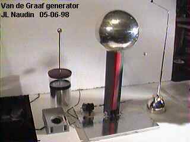
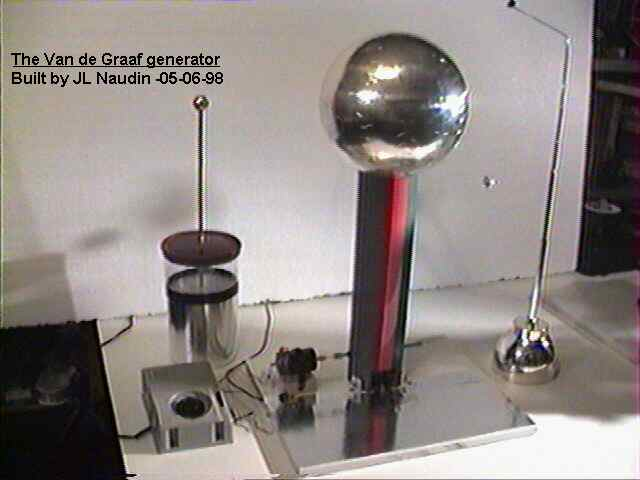
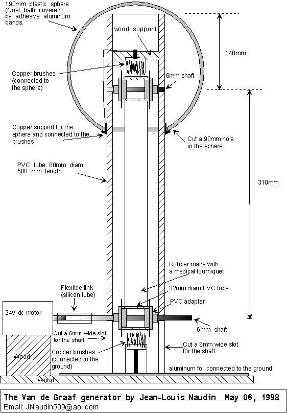
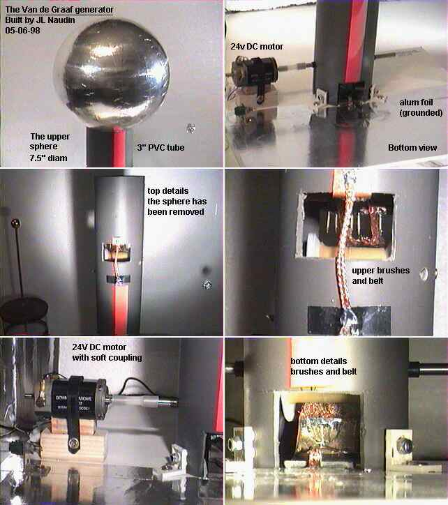
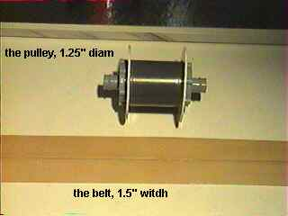

The Naudin's Van de Graaf Generator
by Jean-Louis Naudin
Created on 05-09-98 - JLN Labs - Last update 05-09-98

This Van de Graaf generator is able to produce up to 250kV in dry air,
the material used is common and cheap ( about 50 US$ (300 French Francs) without the DC motor )



For more informations about the tuning and some construction advices about the VDG generator see at :
Return to the JLN Labs home page